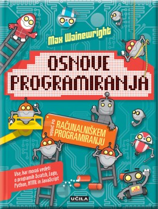

|  |
Osnove programiranja
Vodič po računalniškem programiranju
Max Wainewright
Založba: Učila International
trda vezava, 25,7 x 20 cm, 650 g, 127 stran
ISBN 978-961-00-2999-1
Cena: 12,99€
|
otroški in mladinski priročniki
Kategorija:
otroško in mladinsko > od 13 let dalje
računalništvo in tehnika
otroško in mladinsko > od 9 do 12 let
|
Založnik o knjigi
DOBRODOŠLI V SVETU RAČUNALNIŠKEGA PROGRAMIRANJA
Vse, kar moraš vedeti o programih Scratch, Logo, Python, HTML in JavaScript. S temi osnovnimi navodili o kodiranju se pouči o ZANKAH, SPREMENLJIVKAH in IZBIRI – razvij svoje programerske veščine do te mere, da boš izdelal spletno stran … in še več! Na poti boš srečal ROBOTE POMAGAČE, ki bodo poskrbeli, da ti bo vse jasno. Nauči se uporabljati logo, ustvarjaj igre v scratchu, programiraj v pythonu, delaj poskuse s HTML-jem in z javascriptom izdelaj interaktivne spletne strani.Premikaj figurice po zaslonu, sprogramiraj igro labirint, pripravi sendvič zame ali pa se pouči, kako izdelati spletno stran!nazaj>
|